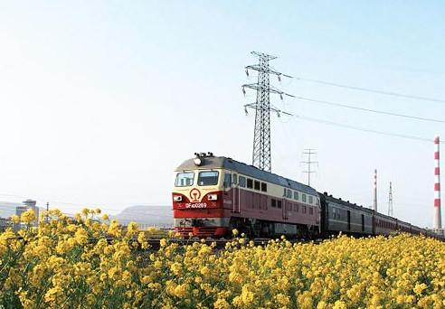

2012年07月30日01:00 来源：经济参考报 作者：周宁

[提要] 2009年，铁道部拟邀请张艺谋导演拍摄名为中国铁路的宣传片，并通过北京新时刻影视文化发展有限公司找到张艺谋。同年9月9日，张艺谋同意委托北京新时刻影视文化发展有限公司拍摄制作这部宣传片。张艺谋分两次收取250万元的酬劳是否缴税？税务部门显示：张艺谋前后两次分别缴纳个人所得税47.3万元和70.5万元。张艺谋表示，他将全面配合，接受监督。
审计署不久前公布的铁道部2011年度预算执行情况和其他财政收支情况审计结果显示，铁道部在未按规定公开招标的情况下，投资1850万元制作片头署名“张艺谋导演”的《中国铁路》宣传片，引发社会强烈关注。随着事件不断发酵，铁道部、张艺谋和宣传片的制作公司饱受公众质疑。
宣传片摄制的来龙去脉如何？张艺谋是否担任该片导演并收取费用？1850万元投资背后有哪些不为人知的秘密？这一事件对我们有何警示《经济参考报》记者对张艺谋导演、铁道部、北京新时刻影视文化发展有限公司等当事各方展开调查，揭开“天价《中国铁路》宣传片事件”内幕。
《经济参考报》记者了解到，2009年，铁道部拟邀请张艺谋导演拍摄名为“和谐铁路”(后改名“中国铁路”)的宣传片，并通过北京新时刻影视文化发展有限公司找到张艺谋。同年9月9日，张艺谋同意委托北京新时刻影视文化发展有限公司拍摄制作这部宣传片。
据参与该片拍摄的北京新时刻影视文化发展有限公司内部人士透露，该公司未经投标便从铁道部获得宣传片的投资款，“点名让张艺谋拍摄，便通过我公司直接找到他”。
经记者核实，北京新时刻影视文化发展有限公司成立于2007年3月，法定代表人张震燕，主要从事文化艺术交流活动和信息咨询，经营期限至2027年。
拿到张艺谋亲笔授权后，北京新时刻影视文化发展有限公司于2009年10月与铁道部直属事业单位“铁道影视音像中心”签订“《和谐铁路》宣传片委托摄制协议”。